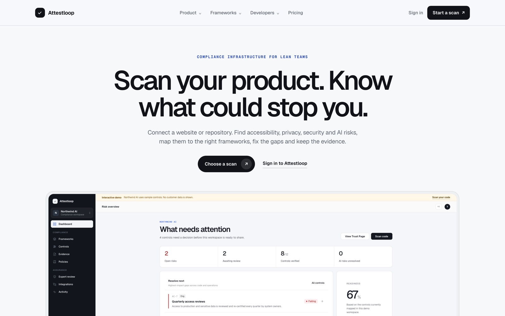
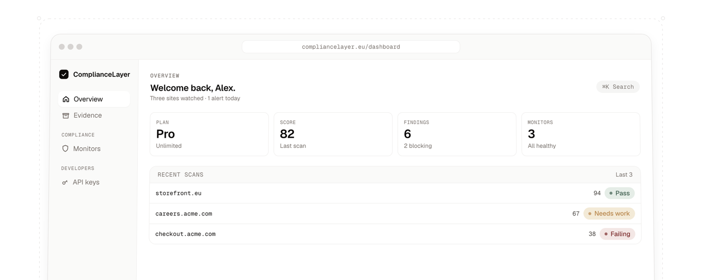
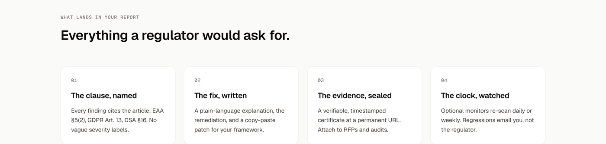
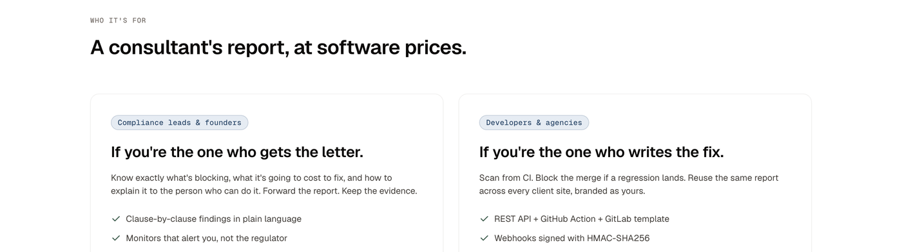
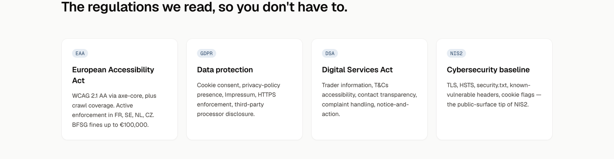

Attestloop: read the fine print, so you don't pay for it.
EU digital regulation arrived all at once: the EAA is enforced, alongside GDPR, the DSA, and NIS2. Most teams have no idea which clause their site is breaking, or how to fix it. Attestloop scans a site, names the exact clause, and writes the remediation: evidence for an auditor, a patch for a developer. I defined the problem, designed the workflow and report, and used AI-assisted tooling to produce a functional implementation I could test against real sites.

The product today, shipping as Attestloop: connect a website or a repository, and work the risks from one dashboard.
A regulatory shift, and two people who feel it
The brief came from a real change: the European Accessibility Act moved from theory to enforcement in 2025, landing on top of GDPR, the DSA, and NIS2. To understand the pain rather than the statute, I traced the journey of a single compliance finding through an organisation and talked to the two people it lands on. They turned out to never share a language.
The lawyer gets the letter
A compliance lead or founder is told they are non-compliant, with no way to translate a legal clause into an action a team can take.
The developer ships the fix
An engineer or agency has to act, but the requirement arrives as prose, not as a patch they can paste and verify.
Nobody owns the handoff
Between "you are non-compliant" and "here is the line that fixes it" sits expensive consulting. Closing that handoff, in one tool, was the whole opportunity.
The single job, scoped tight
Turn a regulation into a named clause and a written fix, for both the person who gets the letter and the person who ships the patch. Scope kept trying to widen into a full GRC suite; running each idea through these six questions is what kept it to one job done well.
Compliance leads and founders, plus the developers and agencies who fix it.
A scanner that names the clause and writes the remediation.
EU rules are enforceable now, but unreadable, and audits are expensive.
Before a regulator, a customer, or an RFP asks for proof.
Any public EU-facing website, scanned on demand.
One scan engine, two outputs, anchored to real articles.
Walking the loop: scan, name, fix, seal
The entire product is a single flow, and I designed it to prove value before asking for anything. You paste a URL, the scan runs, and you get a scored certificate, what passed, what is breaking, the article behind each finding, and the fix. The first scan is free with no signup, because the fastest way to earn trust is to let someone watch their own site get graded.

The operator dashboard: score, findings, monitors, and recent scans.
Report structure and traceability
I structured the report around the four questions an auditor actually asks. That structure was also a guardrail: every finding has to cite a real article, propose a real fix, and stand up as evidence, or it does not ship.
The clause, named
Every finding points to the exact article behind it, such as a specific GDPR Article 13 disclosure gap. No invented severity scores.
The fix, written
A plain-language explanation and a copy-paste patch for the team's framework.
The evidence, sealed
A verifiable, timestamped certificate at a permanent URL, for RFPs and audits.
The clock, watched
Optional monitors re-scan on a schedule and email the team on a regression, not the regulator.

The report structure: the clause named, the fix written, the evidence sealed, the clock watched.
Two readers, one scan
The second decision followed straight from discovery: refuse to pick one audience. The same scan produces two outputs, a clause-by-clause report for the person who gets the letter, and a developer-ready patch, branded as your own, for the agency that ships the fix. One engine, two surfaces, so neither reader has to translate the other's language.

One engine, two surfaces: a clause report for the person who gets the letter, a patch for the one who ships the fix.
Coverage, framed by consequence
Coverage is framed by consequence, not statute: the European Accessibility Act, data protection under GDPR, the Digital Services Act, and the NIS2 baseline, each explained by what it means for a site owner, including the real fines.

Four frameworks, each explained by what it costs a site owner rather than by statute number.
From design to a functional prototype
I took it to a functional service rather than a spec, so every decision had to survive contact with a real scan instead of looking right in a deck.
The certificate is the credibility
A dated record at a permanent URL can be cited in an RFP or an audit response; a score on a page cannot. That is why the certificate, not the scan, is the unit the product is built around.
AI you can audit
The scanner uses models to read pages and draft fixes, but every finding is anchored to a named clause and a checkable patch. A reviewer can trace the claim, verify it, or reject it. The system produces findings; the person signing off decides what to accept.
AI-assisted implementation
I used AI-assisted tooling to reach a working, scanning build I could test against real sites, rather than stopping at a specification.
Hardened against real sites
This was self-QA, not user research: I pointed the scanner at real production websites and read its output the way a sceptical auditor would read mine. The rule that emerged became the product's spine: if a finding could not be traced to a real article and turned into a checkable fix, it was cut. That is what keeps the report trustworthy instead of alarming.
No clause, no finding
Vague warnings were removed until every line cited an article a developer could verify.
Fixes that paste
Remediations were rewritten until they read as a patch, not advice.
Current status and scope
The scanner shipped and still runs: a free first scan with no signup, a scored certificate at a permanent URL, and monitors that re-scan on a schedule.
It has grown since. Where this work scanned a deployed site against EAA, GDPR, DSA and NIS2, Attestloop now also scans repositories and AI systems, and maps findings to SOC 2, ISO 27001 and the EU AI Act. The clause-then-fix pattern designed here is what it still runs on.